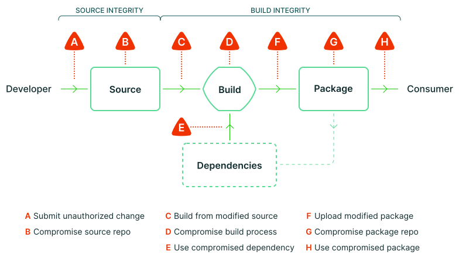

Introduction
What is Software Supply Chain Security?
The Software Supply Chain has been named as an analogy with the "physical" supply chain, that goes from raw materials to end consumers, through a system made of multiple links (factories, delivery, etc.).
A software supply chain is composed of the components, libraries, tools, and processes used to develop, build, and publish a software artifact.1
In the Rust context, it means more specifically the chain from the sources,
the dependencies (whether on crates.io or not),
build toolchain (rustc, cargo), CI/CD platforms, binary distribution, etc.
The software supply chain has been an increasingly frequent target in recent years, as it allows attacking well-secured systems by focusing on weaker links in their supply chain, or attacking multiple targets with a single entry point.
Diagram of the software supply chain risks (by the SLSA project)2:

About this guide
This guide is not a general introduction to the software supply chain security topic. To learn more about it, you can have a look at introductions by vendors like Red Hat or snyk, or the OpenSSF and SLSA projects.
This document is aimed at Rust developers, whether working on libraries in the ecosystem or on programs for end-users (and some parts of the guide are only applicable to one of these situations). It focuses on currently available tooling for the Rust ecosystem and provides actionable items whenever possible.
The checklist at the end gives an overview of the recommendations from the whole guide and helps to prioritize the different topics.
Software Supply Chain on Wikipedia (en) (under Creative Commons Attribution-ShareAlike License 3.0)
Supply chain Levels for Software Artifacts, Supply chain threats (under Community Specification License 1.0)